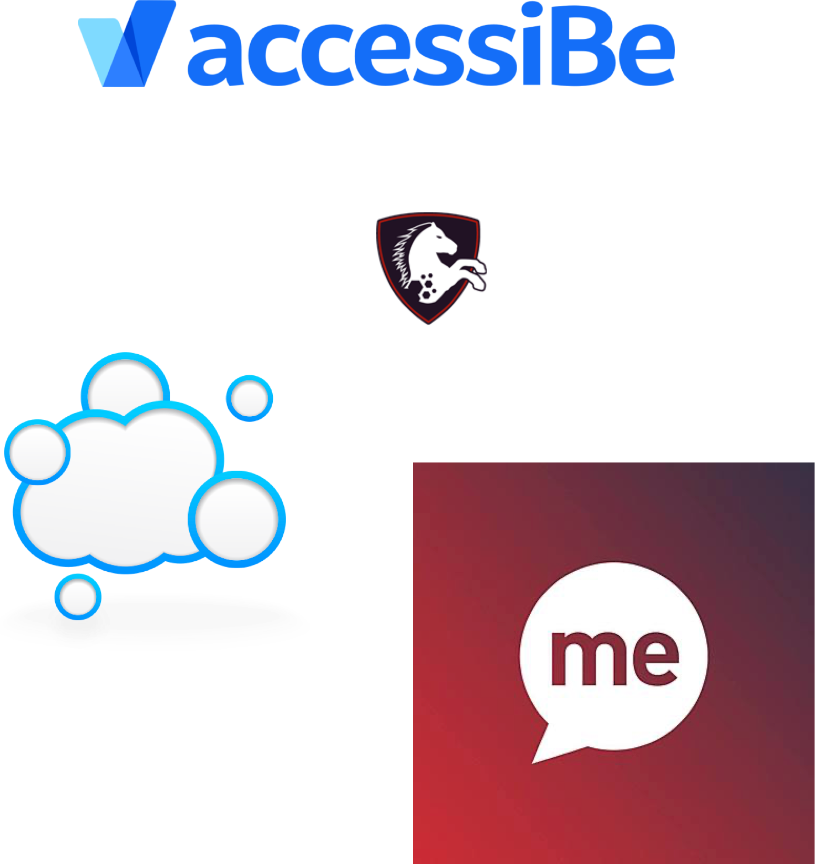

With 20 years experience in on the web, now focusing on expanding our team’s knowledge in Accessibility
London, UK
The practice of making websites usable for people with disabilities such as visual, auditory or cognitive as outlined by WCAG using the following principles:
| Perceivable: Information and interface components must be presented to users in ways they can perceive | Operable: User interface components and navigation must be operable |
| Understandable: Information and the operation of user interface must be understandable | Robust: Content must be robust enough that it can be interpreted reliably by a wide variety of user agents |
Accessibility shares (and overlaps) elements with other practices like UX, Human Centred Design, Universal Design, etc. But is not the same.
| Inclusivity: applies to users from diverse backgrounds and cultures, not only disabled | Web Standards: refers to specific patterns of how to write code for the web |
| Universal Design: usually covers the previous two plus accessibility specific elements |
Established with three levels, each one contains a number of requirements that must be met to achieve the given level. Each level requires the previous level requirements to be met.
| A: minimum requirements, consists of 25 criteria | AA: most common, consists of all 25 from level A plus 13 additional requirements |
| AAA: most accessible, for specific audiences, adds 23 more criteria for a total of 61 |
Because is the right thing to do
Not making the effort to ensure what we make is accessible excludes millions of people from using your products efficiently.
| Financial: 25% of the population live with a disability | Legal: public service sites are mandated by law to be compliant |
| Moral: inaccessible products can have a negative impact in many people's lives |
But just as important: design
From color selection to copy organisation, design plays an important role in accessibility.
|
|
Special markup by the use of "role" or semantic tags.
<nav aria-label="Secondary Navigation">...</nav>
|
Links can get pulled out of context.
From roles, to aria, to specific values, many attributes aid with accessibility.
|
|
https://developer.mozilla.org/en-US/docs/Web/Accessibility/ARIA/ARIA_Techniques
Add a skip to content link as the first element of any page.
<a href="#main-content" class="skip-link">Skip to content</a>
.skip-link {
position: absolute;
top: -50px;
left: 0;
&:focus {
top: 0;
}
}
Important to understand the effect of CSS on accessibility.
CSS Display modes have an effect on how a page is perceived.
When using display: none; or visibility: hidden; on an element, the element is visually removed and also removed from assistive technologies.
Using opacity: 0; or other tricks like overflow: hidden; can visually hide an element from the page but still appears in the tree for assistive technologies.
With modern CSS there are many ways to change the position and order of elements on a page.
But be careful about your HTML order, because this is what's used for assistive technologies.
Using flex-direction: row-reverse; or order: 2; properties to alternate sections is better than making the HTML or JS replicate this effect.
Always visually indicate when something is selected or focused.
Don't remove focus styles from the browser, or replace them with alternative options to ensure actionable elements are clearly indicated as active/current.
Make sure text is big enough to be readable and have sufficient spacing.
Font styling can have an impact as well. Use +16px to avoid phone auto-zoom on fields.
Make sure the text containers are flexible for dyslexic users who may change the font and spacing.
When working with interface elements that change state, like accordions, tabs, toggles, etc. make use of JS and aria attributes to programmatically indicate their current visual state with the value true or false.
aria-selected aria-hidden aria-expanded aria-checked aria-current
https://developer.mozilla.org/en-US/docs/Web/Accessibility/ARIA/ARIA_Techniques
https://developer.mozilla.org/en-US/docs/Web/Accessibility/ARIA/Roles/Tab_Role
Interactive elements that direct the user to a different part of the page using JS animated scrolling should ensure the focus is applied to the target element so they can continue navigating from that point using the keyboard.
A relatively easy to achieve this is by making the target element reachable via keyboard (tabbable) (if it’s not already) using tabindex=“-1” and then applying a focus() function to it.
Make sure users can stop/pause them.
Provide facilities to stop all animations, and ensure the animations are sensible, and that they ad value to the experience.
Many uses of animation are unwarranted
Use role="alert" and make errors be present in the code at all times, trigger visibility when required.
Also with other alerts non-form related, use aria-live="true" to indicate content that might change after the page loads.
Animations, Carousels, etc are too often not compliant, or have wrong implementation.
Sometimes you need to find an alternative or modify the plugin to make it compliant.
Applications written in pure JS often don't consider accessibility principles.
JavaScript has plenty of capabilities to make sites and apps accessible, but the work has to be put in, from the planning stage of the project.
Please don't
Apart from the further encouraging of the idea that accessibility issues can just be patched in the end:
|
 |
And additional information
|
Also Chrome Lighthouse
And additional information
|
@ramono